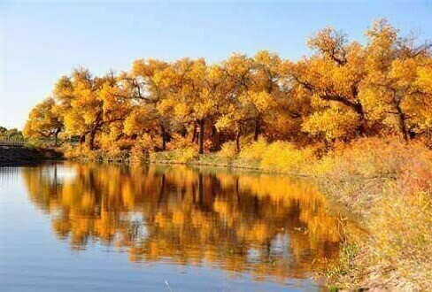
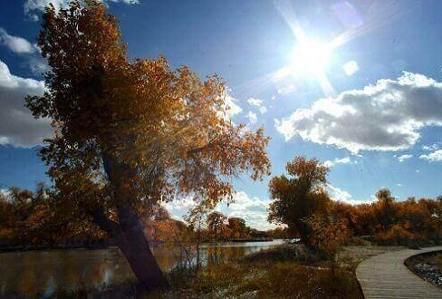
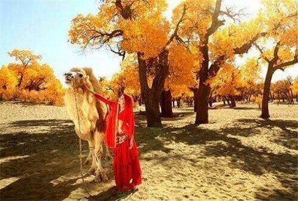

morly旅游圈
到额济纳胡杨林一览它的美貌请注意：
衣着用品： 十月进入草原和戈壁，白天的气温会是在二十几度左右，夜间气温最低会达到十度以下。如果遇到下雨的天气，白天的气温会更低.这里早晚的温差很大，所以有 “早穿棉袄午穿纱”的说法。清晨拍日出的朋友一定要多加衣物，大家要携带的衣物应该以轻便、防风、保暖、体积小的衣物为主，尽量带一些可以重叠穿着的服 装。戈壁，沙漠，海子等地区风大要注意防风保暖。不要带厚重且不防风的衣物，所带衣物如： 长袖T恤， 棉布或牛仔布衬衫， 锋衣抓绒衣， 单夹克牛仔裤， 保暖内衣或薄毛衣裤， 头巾 纱巾 遮阳帽。
饮食提示： 在草原地区饮食以牛羊骆驼肉，面食为主，蔬菜少且贵，做好思想及胃口的准备。可以在银川自行购买些水果带在身边以便于食用。草原气候比较干燥，为增强抵抗 力应加强蔬菜水果摄入，切忌无节制地食用羊肉，一旦上火，将影响体力和健康水平。由于当地蔬菜水果出产不多，携带合成维生素，特别是VC。
健康提示： 携带平时服用的药品及预计会用到的处方药和消炎类药品。另外在用餐的过程中，请服用些大蒜或食醋，能起到消炎和调理胃肠的功效。
交通信息： 到甘肃省嘉峪关市，可乘飞机，可飞往西安，在转机嘉峪关，周一至周日均有航班可乘，也可直飞银川，后乘坐班车至阿拉善盟阿拉善左旗转车至额济纳旗达镇。也可乘火车到酒泉/嘉峪关，北京—酒泉/嘉峪关K43/T177/T69次、西安—酒泉/嘉峪关K591/K697次、成都—酒泉K452次、兰州—酒泉T9205/T9203/T9201/T295/K9661/K9667次。换乘酒泉/嘉峪关至额济纳旗长途汽车，从酒泉/嘉峪关到额济纳约400公里，一般每天早上一班，胡杨节期间会有加班，最晚一班大约12点，约6小时到。 此处不通航班与火车，只能依靠汽车走公路。包车比较方便，在额旗去各个景点只能靠包车，一般四驱越野车包一天约在200～300元（汽车磨损费，油费不算）。达来湖布镇到二道桥、八道桥，包车半天往返50元，单程15元，在额济纳旗达镇汽车站十字路口附近，有大量个体出租车辆，比较便利，另额济纳旗达镇有三家出租车公司，出租车多为夏利，车费以人数计算，镇区一人3元，出了镇区需要与司机商量价格。
主要景点： 居延海，额济纳河，古城遗址巴丹吉林沙漠。
特别提示： 额济纳胡杨林属于季节性非常强的自然景观。根据往年经验，每年9月10日左右开始有局部的黄叶，9月25日左右有将近三分之一的树叶变黄，10月1日左右有一多半树叶变黄，因此每年最好的时间为10月1日-10月15日之间，胡杨树叶大多都黄了。如果天气稳定，黄叶可以持续到10月20日左右，如果寒流频繁，胡杨林叶子就开始凋零，所以有充足假期的最好选择10月5-15日前往。
内容整理至网络，如有侵权，请联系我们！1255394075@qq.com
  